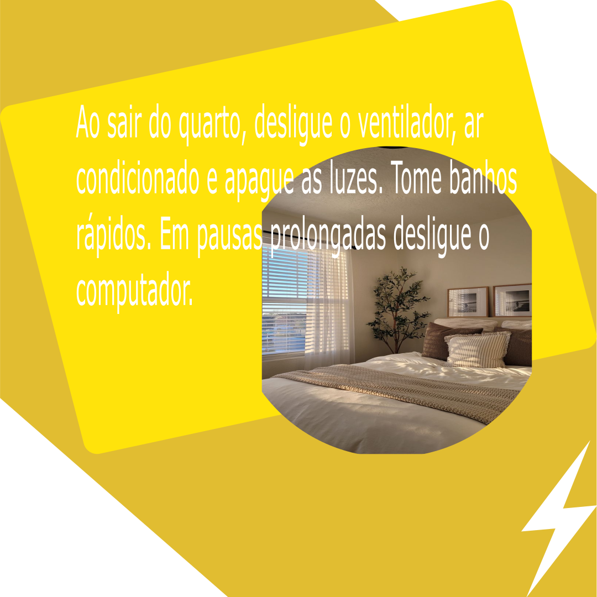
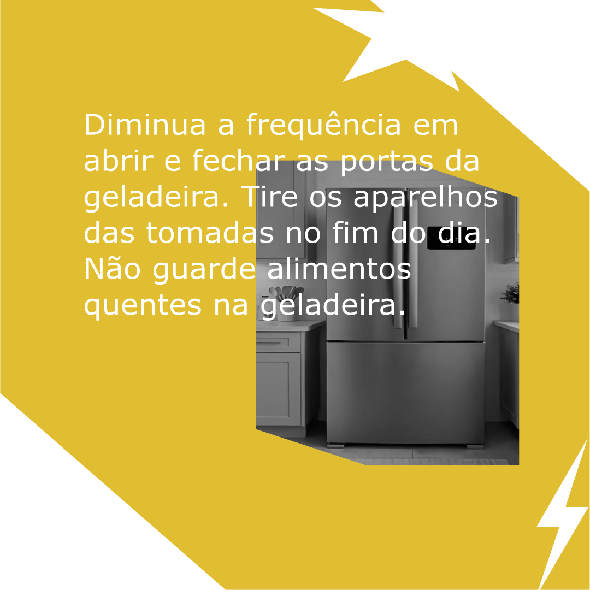
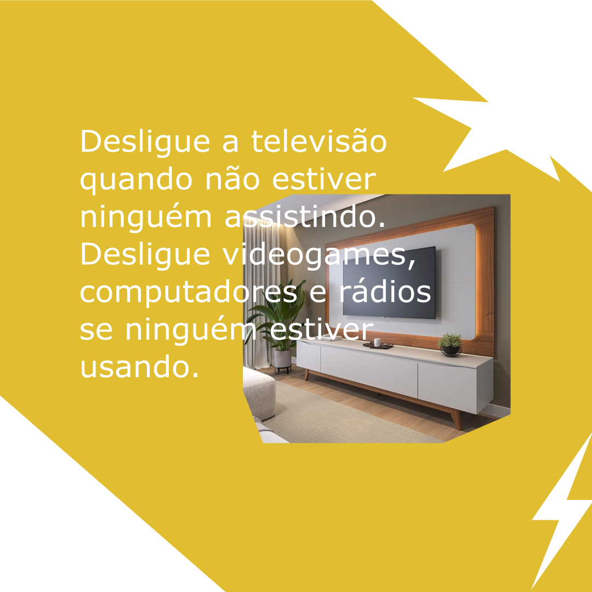
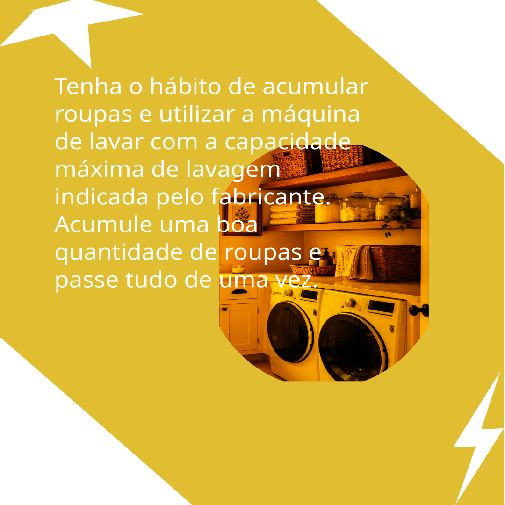

As imagens abaixo foi criada utilizando as ferramentas de desenho. Durante a atividade, foram utilizados recursos como formas, cores, alinhamento e edição para produzir um desenho digital.




Essa atividade contribuiu para o aprendizado das principais ferramentas de edição de imagens e mostrou como criar um projeto de forma organizada e criativa.